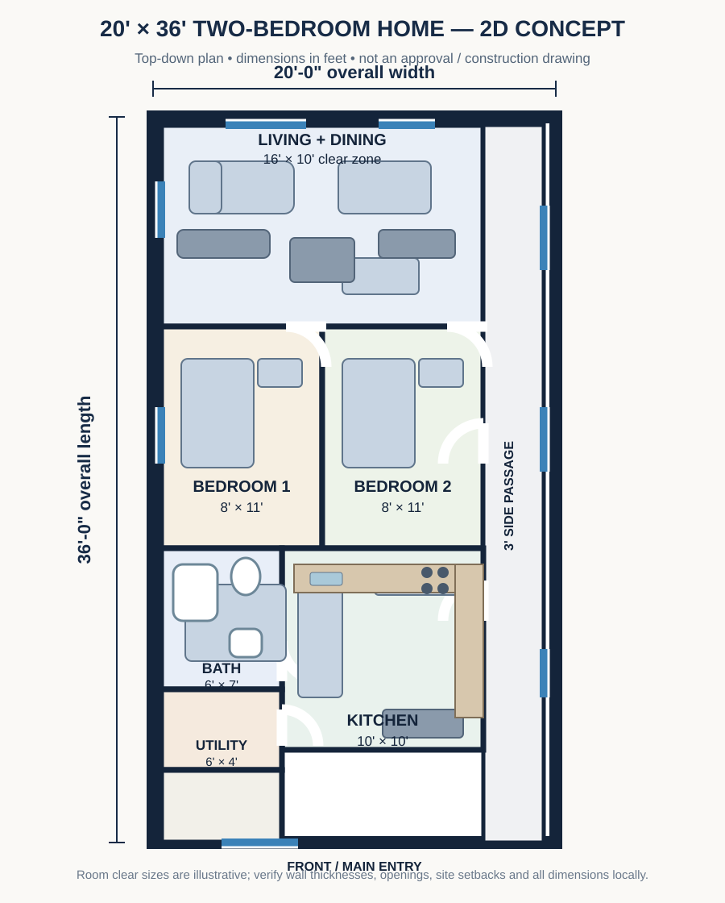
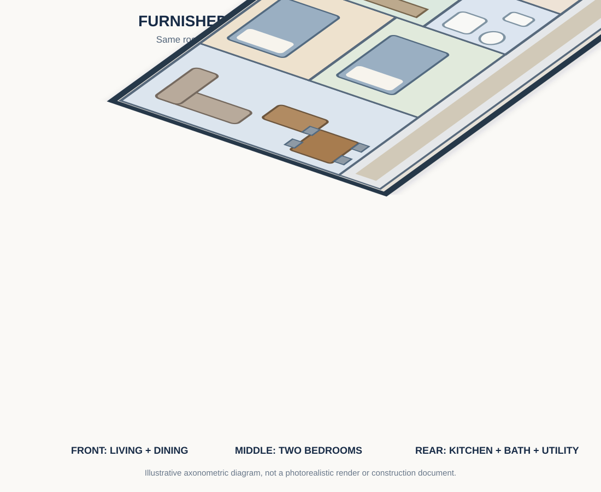

A narrow frontage does not automatically mean a cramped home. The key is to decide which rooms need privacy, which spaces can share an open zone and how people will move between them. This guide develops an illustrative two-bedroom concept for a building width of about 20 feet. It is a design study, not a measured or approved construction drawing.
1. Start with the site and household needs
Before drawing rooms, measure the actual plot and identify its road access, boundaries, slope, neighboring buildings, trees, drainage and available utility connections. Confirm the permitted building envelope, setbacks, access requirements and any local planning conditions with the relevant authority and a qualified local professional. A 20-foot building width is only a starting assumption; the usable internal width will be smaller after external and partition walls are accounted for.
For this example, assume a compact single-storey household needing two bedrooms, a combined living and dining area, a separate kitchen, one shared bathroom and a small utility/laundry zone. A covered front veranda is optional and should be included only if the site and permitted footprint allow it.
2. Suggested room schedule
| Space | Illustrative clear size | Design purpose |
|---|---|---|
| Living / dining | 16 × 10 ft | Front shared room with sofa, coffee table and compact dining set. |
| Bedroom 1 | 8 × 11 ft | Compact bedroom; verify bed, wardrobe and door clearances. |
| Bedroom 2 | 8 × 11 ft | Compact bedroom; furniture choice depends on household needs. |
| Kitchen | 10 × 10 ft | L-shaped counter with sink, cooker and refrigerator positions. |
| Bathroom | 6 × 7 ft | Compact wet area; verify fixture and door clearances. |
| Utility / laundry | 6 × 4 ft | Small service niche for washing and cleaning supplies. |
| Side passage | 3 ft wide | Continuous route connecting the front, bedrooms and rear service zone. |
The concept uses a 20 × 36 ft outside footprint. Room sizes are approximate clear internal targets, with an approximately 3 ft side passage. Actual clear dimensions change with wall thickness, structure and site conditions. The 8 ft-wide bedrooms are compact; test full-size furniture and door swings before accepting this arrangement.
3. Dimensioned 2D floor plan
This is a drawn floor-plan diagram, not a set of labeled boxes. It shows the outer footprint, room partitions, furniture blocks, window positions, door openings and side passage. Dimensions are approximate clear internal targets and must be checked against the actual wall build-up and site.

4. Matching 3D-style furnished cutaway
This axonometric cutaway uses the same room zoning as the 2D drawing. The roof is removed so the living and dining area, two bedrooms, kitchen, bathroom, utility space and side passage can be seen together. It is a vector 3D-style illustration, not a photorealistic render or certified architectural model.

4. Door, window and circulation planning
Place the main entrance so it opens into the shared living zone without colliding with the sofa or dining chairs. Bedroom doors should be positioned to preserve usable wall space for beds and wardrobes. Check the actual door leaf and swing, or choose an appropriate sliding arrangement only where permitted and practical. Do not let an open door block a main route.
Provide bedroom windows for daylight and cross-ventilation where the site allows. Kitchen openings should support ventilation while keeping cooking surfaces and storage usable. Bathroom ventilation may be through a suitable window or a properly designed mechanical system. Window size, privacy screens, shading and boundary distances need to be coordinated with the local climate and regulations.
As a furniture test, draw the bed, wardrobe, sofa, dining table, refrigerator and kitchen counters before fixing room partitions. Keep a continuous walking route from the entrance to the bedrooms and service spaces. Confirm clearances against the actual furniture dimensions and the needs of every household member.
5. Exterior concept
The 2D plan and 3D-style cutaway above show the internal arrangement. A coordinated front, side and rear exterior still needs to be developed after confirming the actual site orientation, roof form, openings, drainage and local planning requirements. The generic feature photograph at the top is architectural inspiration only; it is not the exterior of this exact floor plan.
For the exterior, a simple rectangular mass with a restrained roof form can be easier to explain and coordinate than a complicated series of projections. A small shaded entry, durable exterior finish and correctly placed windows can make the façade feel welcoming without relying on expensive decoration. The side and rear elevations should also show rainwater disposal, service access, ventilation openings and privacy considerations.
6. Roof, structure and building services
A simple roof geometry may reduce junctions and make rainwater collection easier to plan, but the correct roof type, pitch, covering, framing and tie-down details depend on wind, rainfall, spans, materials and local requirements. A qualified designer or engineer must size and specify the roof structure. Likewise, foundations and wall systems must be selected for the actual soil, loads and construction method rather than copied from an inspiration image.
Group kitchen and bathroom plumbing where practical to simplify service routing, while maintaining proper drainage gradients, access for maintenance and suitable ventilation. Plan electrical outlets, lighting, appliance circuits, earthing and protective devices with a qualified electrician. Keep wet-area electrical provisions and water services coordinated on drawings before construction begins.
7. Construction stages: from concept to finished home
- Site checks and approvals: Confirm boundaries, levels, access, services, local permissions and the final building footprint.
- Detailed design: Prepare coordinated architectural, structural, electrical, plumbing and drainage drawings for the site.
- Setting out and foundations: A competent professional determines the foundation system and checks levels and ground conditions.
- Walls and openings: Build the specified wall system and form door and window openings to the approved drawings.
- Roof and weather protection: Complete the engineered roof, rainwater goods and external weatherproofing.
- Services and finishes: Install and test electrical, water and drainage systems, then complete floors, walls, ceilings, doors and fixtures.
- Final inspection: Check drainage, ventilation, waterproofing, safety, workmanship and required approvals before occupation.
8. Materials and cost planning
Do not estimate a project from the room schedule alone. The total cost depends on the actual floor area, foundation conditions, wall type and thickness, roof system, openings, finishes, transport, labour, services, site access and local taxes or fees. Prepare a measured quantity take-off only after the drawings and specifications are complete. Request comparable itemized quotations and include a contingency appropriate to the project.
For a cost-conscious design, prioritize a regular footprint, repeatable window sizes, a straightforward roof, durable easy-to-maintain finishes and a compact service zone. Avoid changing room positions after plumbing, electrical and structural drawings have been coordinated. No reliable price is stated here because location, date, specification and site conditions have not been fixed.
9. Further visuals to develop
- 2D floor plan: The dimensioned vector drawing above shows room zoning, furniture blocks, window positions and circulation.
- 3D-style cutaway: The matching axonometric illustration above shows the same arrangement with the roof removed.
- Exterior elevations: Front, side and rear elevations still need a coordinated design based on the final roof, openings and site orientation.
- Construction sequence: Foundation, wall, roof and finishing images should be clearly labeled as conceptual illustrations, not documentary construction photography.
10. Important limitations
This article is a conceptual planning guide. The diagrams are illustrative and do not provide structural calculations, foundation details, certified dimensions, approval drawings or a bill of quantities. Have a qualified architect or building designer and relevant engineers adapt and verify every drawing for the actual site, household, climate and jurisdiction before purchasing materials or starting work. Have a qualified architect or building designer and relevant engineers adapt and verify every drawing for the actual site, household, climate and jurisdiction before purchasing materials or starting work.
Explore more house-planning guides
Compare this concept with our compact two-bedroom home plan, browse small-house layout ideas, learn about home design budget planning, and explore modern house exterior design ideas.